الفصل الخامس · بيغ بايت
BigBite بيغ بايت
بيغ بايت. نظام توصيل طعام لدمشق نقده أولاً، صُمّم قبل أن يُكتب سطر برمجة.
الزبونمؤسّس من دمشق
النطاقزبون، كابتن، عمليات، مطعم
المرحلةورقة النطاق وتصميم المنتج
2026نقداً عند الباب
الحركة الأولى · طلب واحد، من الموبايل إلى اللوحة
طلب واحد، من الموبايل إلى اللوحة
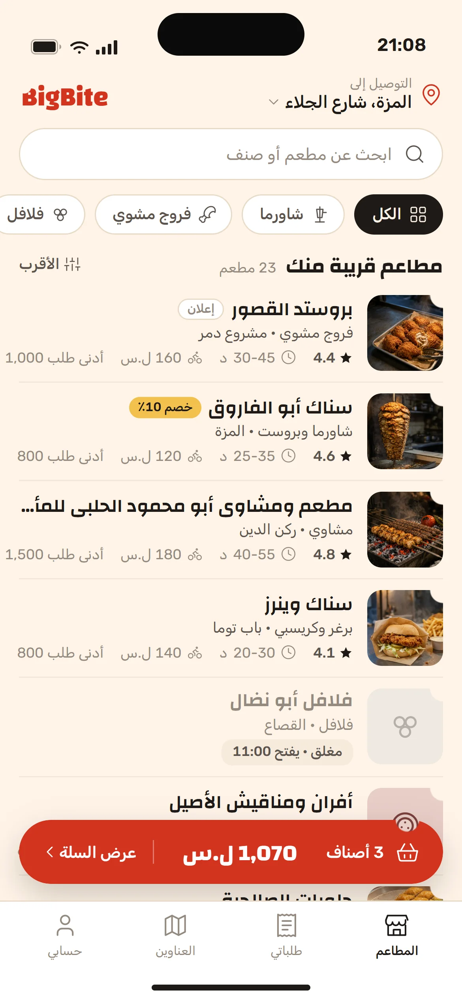
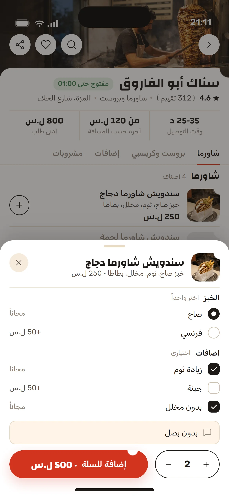
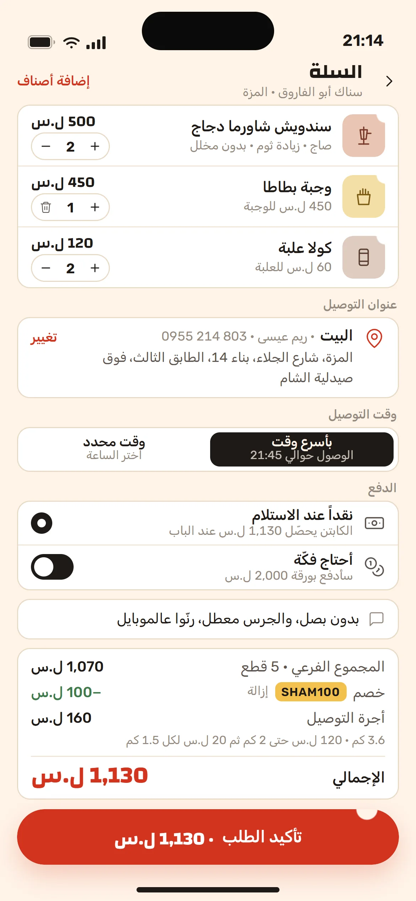
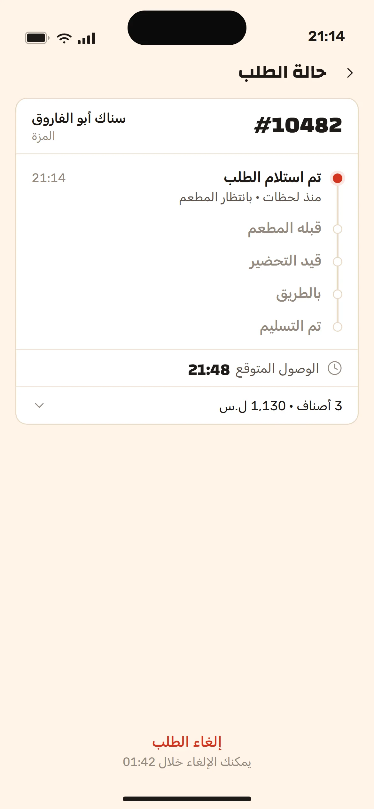
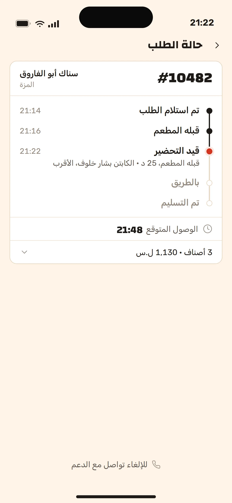
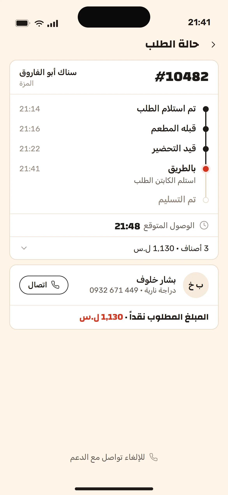
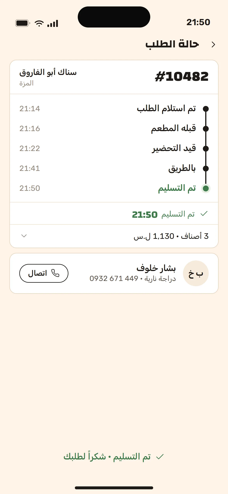
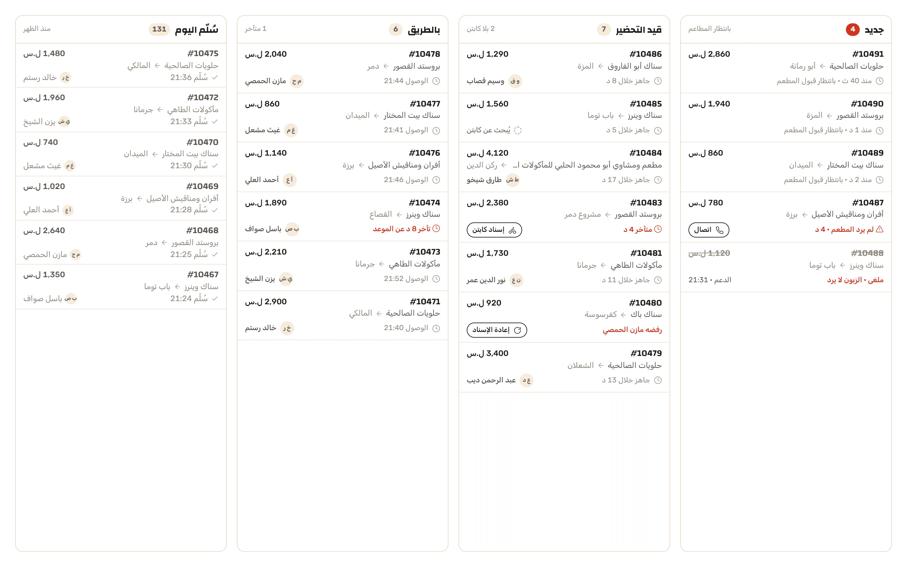
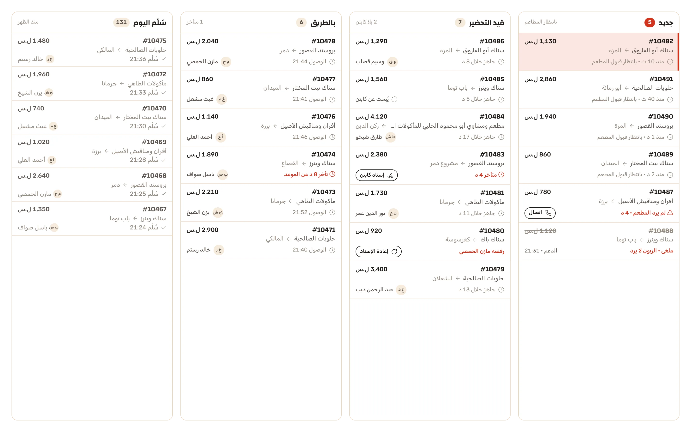
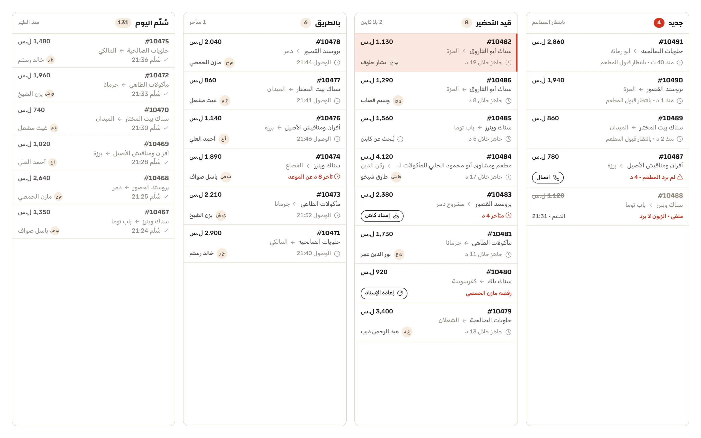
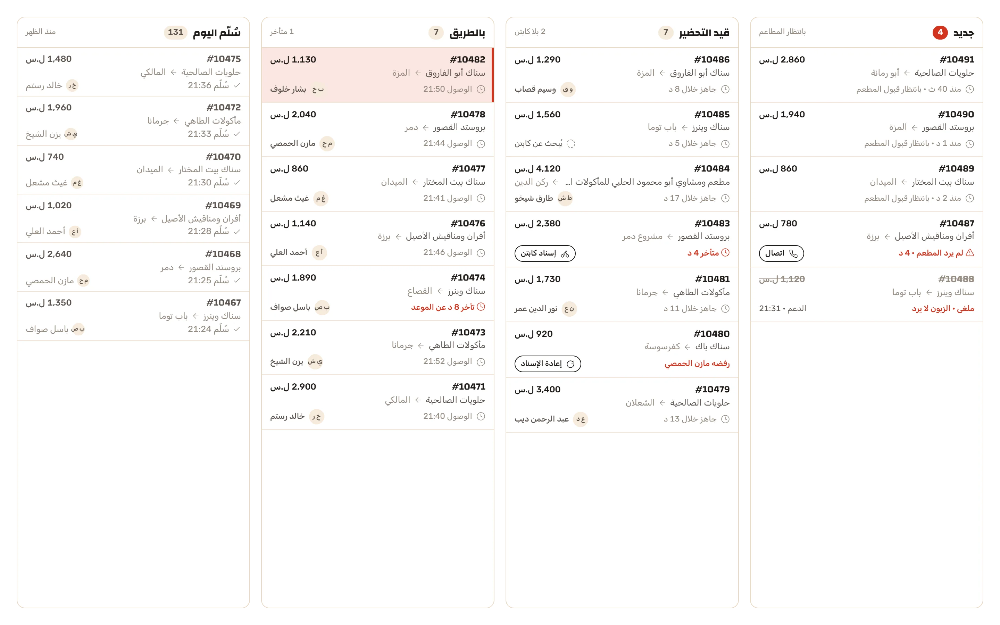
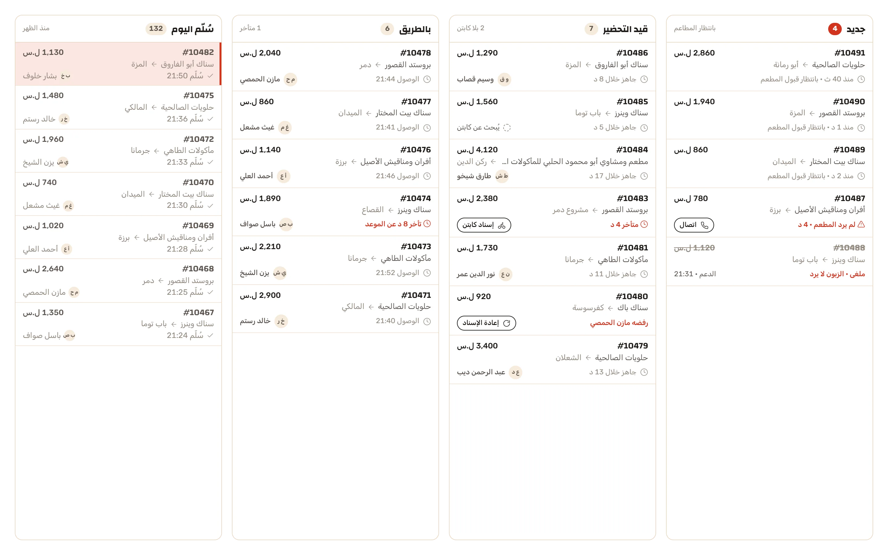
القصة
منصّة توصيل طعام لدمشق يحصّل فيها الكابتن نقداً عند الباب. جاء المؤسّس باسم ووثيقة متطلبات، بلا مطاعم ولا هويّة ولا فريق: فكانت ورقة النطاق أولاً، ثم المنتج على واجهاته الأربع.
عن الزبون
مؤسّس من دمشق بخلفية تسويقية يريد إطلاق توصيل الطعام في مدينة واحدة، والدفع نقداً عند الباب. كتبتُ ورقة النطاق: ثلاثة عشر قسماً من محفظة الكابتن النقدية إلى التسوية الأسبوعية إلى إسناد الطلب لأقرب كابتن، وصمّمتُ المنتج على واجهاته الأربع: تطبيق الزبون، تطبيق الكابتن، لوحة العمليات، لوحة المطعم. أُرسل العرض في آب 2026.
التحدي
- 01
النقد هو النظام: الكابتن يدفع للمطعم من جيبه ويحصّل من الزبون، فرصيده يقرّر من يأخذ الطلب، وكل أجرة تنقسم 80/20.
- 02
إسناد بلا موظّف إسناد: أقرب كابتن حرّ رصيده يكفي، ومهلة قبول، وإعادة إسناد تلقائية إن رفض أو تأخّر.
- 03
لا هويّة نصمّم لها: اسم فقط، فكان على الهويّة أن تأتي مع الشاشات، وأن تُقرأ في نصف ثانية على موبايل كابتن في الزحمة.
المنهج
ورقة نطاق واحدة يستطيع الزبون توقيعها، ثم نظام تصميم واحد لأربع واجهات: الفلفل لكنةً وحيدة، وChanga لكل ما يُقرأ عبر الكونتر، وقضمة من كل بلاطة وحبّة. أندرويد بكوتلن، ويب بريأكت، وسبرينغ بوت خلفهما، وخرائط مجانية.
دوري
النطاق والتسعير وتصميم المنتج بواجهاته الأربع؛ العرض ومراجعتاه والاجتماع.
الحركة الثانية · على الكونتر
على الكونتر
صفحة المطعم تفتح على كونتر الشاورما نفسه، وورقة التخصيص تسأل عن الخبز والإضافات لا أكثر. السلة تعرض طريقة دفع واحدة لأنه لا توجد غيرها، وتشتقّ أجرة التوصيل من المسافة أمام الزبون بدل أن تعلنها.
قضمة من زاوية كل بلاطة وحبّة
الأجرة تُشتقّ من المسافة: 3.6 كم
طريقة دفع واحدة، فلا خيار يُعرض
الكابتن يدفع للمطعم من جيبه ويحصّل من الزبون عند الباب. لذلك رصيده هو أول سؤال قبل أي إسناد.
-
1,130الإجمالي، نقداً عند الباب
-
970قيمة الطلب بعد الخصم160أجرة التوصيل، 3.6 كم
-
795للمطعم175عمولة بيغ بايت 18٪128للكابتن، 80٪ من الأجرة32لبيغ بايت، 20٪ من الأجرة
الحركة الثالثة · غرفة العمليات
غرفة العمليات
لوحة يحدّق فيها موظّف الوردية ثماني ساعات، لا لوحة مؤشّرات: ثلاثة أعمدة كثيفة وشريط المسلَّم مطويّاً، والدرج يفتح على الطلب بكل ما يحتاجه المشرف: العنوان والملاحظة، والكابتن ورصيده، والأصناف والمجاميع والعمولة، والسجل دقيقةً دقيقة.
![لوحة الطلبات الحيّة لعمليات بيغ بايت في دمشق الساعة 21:38 على سطح مكتب بعرض 1440: الشريط الجانبي الفحمي بعلامة B المقضومة وتسعة أقسام، والشريط العلوي بمرشّحي المطعم والمنطقة والبحث وأعداد اليوم، وثلاثة أعمدة كثيفة: جديد وقيد التحضير وبالطريق، وشريط المسلَّم مطويّاً عند 131، والدرج ملتصقاً بالحافة بالطلب #10482: عنوان ريم عيسى وملاحظتها، والكابتن بشار خلوف برصيده النقدي 4,800 ل.س معلَّماً «يكفي»، أُسند تلقائياً 21:22 وقبِل خلال 14 ثانية، والأصناف الثلاثة، والمجاميع بعمولة 18٪ وتقسيم الأجرة، والسجل من 21:14 إلى 21:50 المتوقعة.](../../cases/bigbite/renders/04-ops-desktop@2x.webp)
الأقرب يأخذه: أُسند تلقائياً وقُبل خلال 14 ثانية
رفضه كابتن؟ يُعاد الإسناد بلا يد بشرية
رصيده 4,800، يكفي: الشرط قبل الإسناد
المتأخّر بالفلفل، والملغى مشطوب لا محذوف
النتائج
4
واجهات، نظام واحد نقده أولاً
13
قسماً في ورقة النطاق، من المحفظة إلى التسوية
20
أسبوعاً من الدفعة إلى التسليم، في ورقة النطاق
الفصل الخامس · اكتمل
حقل الفصل التالي يغمر الشاشة